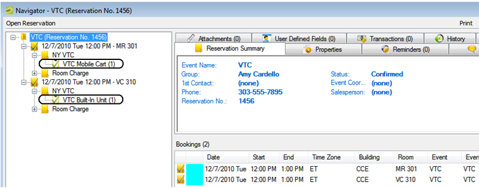

Overview of Video Conferencing Configuration
For organizations that use video conferencing, additional configuration features are available to simplify the video conference reservation process, which typically uses a request or approval for room request process. When configured properly, EMS searches for all rooms that have a built-in video conferencing feature and it searches for all rooms defined in the system to accommodate a video conference. Shown below is a reservation with a mobile video conferencing cart automatically added to bookings.

You must configure the following types of rooms so the correct rooms and equipment display when users request video conferences in the Reservation Wizard (or the EMS Web App).
- Standard meeting rooms that can accommodate a mobile video conferencing cart. Room availability for this scenario is based on the availability of the room and on the availability of the mobile video conferencing cart resource pool. For a room to be displayed as available, at least one mobile video conferencing cart must be available for the time slot selected. If a user selects one of these rooms, a booking detail for a mobile video conferencing cart is automatically added to the booking after the reservation is submitted.
- A room or other location that can accommodate a mobile video conferencing cart. The room is configured as an Override Description room type. Room availability for this scenario is based only on the availability of the mobile video conferencing cart resource pool. If a user selects this room, the user can enter a location. After the reservation is submitted, a booking detail for a mobile video conferencing cart is automatically added to the booking.